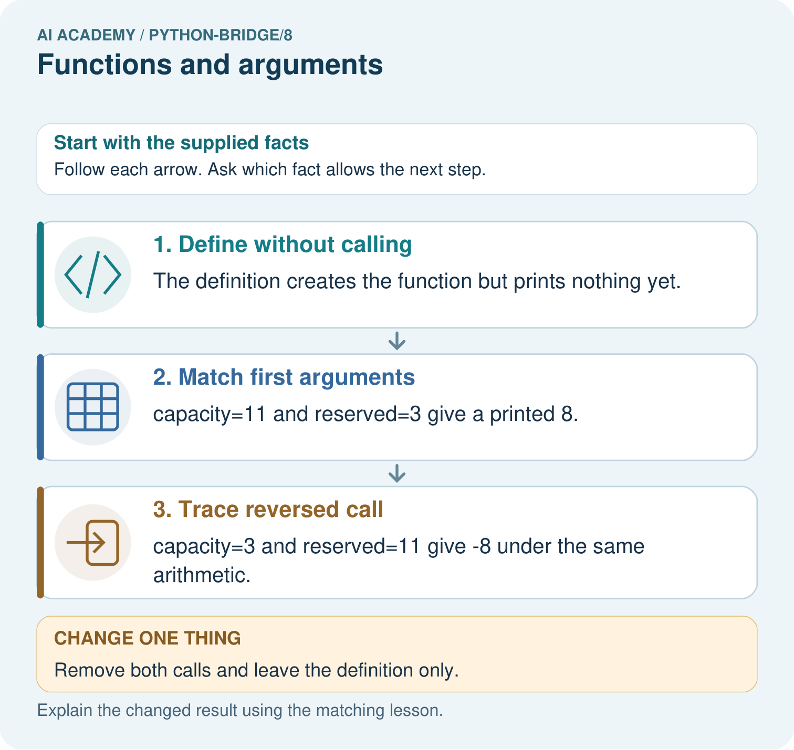

AI Academy · Python readiness bridge · Workbook
Functions and arguments
Learn to understand, design, build, test and explain AI systems responsibly.
Project: Python readiness portfolio
Workbook · 1 of 14
Recall and choose your starting point
Try the recall before opening notes. Then use a different colour or a labelled second line to correct your explanation.
Lists and indexing
Without opening the old lesson, explain one key idea from Lists and indexing. Give an example and a mistake that the idea helps you avoid.
Branching and boundary tests
Without opening the old lesson, explain one key idea from Branching and boundary tests. Give an example and a mistake that the idea helps you avoid.
Values variables and types
Without opening the old lesson, explain one key idea from Values variables and types. Give an example and a mistake that the idea helps you avoid.
Workbook · 2 of 14
Practise with fading help
Use W2: Follow the execution order for Functions and arguments. Record the answer once; the lesson and workbook refer to the same attempt.
| Given inputs | Procedure I chose | Middle steps | Result and check |
|---|---|---|---|
Workbook · 3 of 14
Individual reasoning check
Use the worked case for Functions and arguments. Proposed explanation: “Writing def runs the body immediately”. Decide whether this explanation is supported. Point to the step or supplied fact that decides; explain your repair if needed.
Workbook · 4 of 14
Independent transfer case
Independent case: Match positional arguments to parameters
Predict both returned and printed values, showing which argument supplies first and second. What is displayed if the program contains only the function definition and no calls? Why does swapping these arguments change the result?
def difference(first, second):
return first - second
print(difference(11, 4))
print(difference(4, 11))
Attempt this case before feedback. Record any help. Earlier examples below are further practice; a case already practised with feedback cannot establish fresh transfer.
Workbook · 5 of 14
W1 Label the parts
In def show_remaining(capacity, used), identify the function name and parameters. In show_remaining(15, 6), identify the arguments and their matching parameters.
Workbook · 6 of 14
W2 Follow the execution order
Using the correct definition, predict show_remaining(8, 3), show_remaining(8, 8) and show_remaining(8, 0) in that order. Explain what happens if the file contains only the definition.
Workbook · 7 of 14
W3 Repair ignored arguments
The faulty body calculates 12 - 4 regardless of the call. State the output and expected output for show_remaining(11, 2). Repair the expression and name an earlier call to rerun.
Workbook · 8 of 14
W4 Create a new function independently
Each sealed box contains 6 counters. Define show_stock(boxes, loose) to print the total counters using its two parameters. Assume nonnegative integer arguments. Call it with (3, 2), (0, 2) and (3, 0). Predict each output and explain why show_stock(2, 3) is a different case.
Workbook · 9 of 14
W5 State the input assumption
The correct subtraction function prints -1 for show_remaining(4, 5). Does successful execution make this a valid cupboard record? Explain what the function assumes and what needs checking.
Workbook · 10 of 14
Project checkpoint and reflection
Add a labelled functions and arguments evidence sheet to Python readiness portfolio. Show how you can distinguish a function definition from a function call. Use the supplied fictional case and keep its inputs, intermediate steps, calculation or prediction, and limitation. Connect this record to last week’s record; a matching answer without a trace is insufficient.
Workbook · 11 of 14
Feedback, return check and learning record
| Evidence | My record |
|---|---|
| Worked alone / hint / model | |
| First step I repaired and why | |
| New case checked later; date and result | |
| What I can now explain without notes | |
| One remaining question |
Revisit this idea with your teacher after a delay. Familiarity is different from explaining and using it on a changed case.
Workbook · 12 of 14
Pictorial case practice: Functions and arguments
Match arguments to parameters. A function prints the difference between capacity and reserved spaces.
Python 3: def show_free(capacity,reserved): print(capacity-reserved). Calls: show_free(11,3); show_free(3,11).

Match every argument to a parameter for the two calls. Why do outputs differ, and what prints when both calls are removed?
Support used: alone / hint / worked example. This record is practice evidence.
Project connection: For Python readiness before the Responsible Plant Classifier, retain a trace of the values, the predicted outputs and the changed-case explanation. Use actual Python 3 results to check the prediction after reasoning first.
Workbook · 13 of 14
Project portfolio milestone
Project: Python readiness portfolio
Current milestone: Python readiness portfolio. Keep runnable code, predictions, actual outputs, one repaired error and an explanation of a function on changed inputs.
For Python readiness before the Responsible Plant Classifier, retain a trace of the values, the predicted outputs and the changed-case explanation. Use actual Python 3 results to check the prediction after reasoning first.
| Evidence to keep | My record |
|---|---|
| This week’s input and deciding step | |
| Prediction and actual result (or labelled paper trace) | |
| One change since the previous checkpoint and why | |
| One error or limit and the next test |
Workbook · 14 of 14
Supported practice and learning evidence
Use this supported practice once, in the browser or on paper. Keep the reserved independent assessment for a separate first attempt before teacher feedback.
Match arguments to parameters. A function prints the difference between capacity and reserved spaces.
Practice 1: explain the deciding evidence
Which labelled step matches this detail? capacity=3 and reserved=11 give -8 under the same arithmetic.
1. Match first arguments
2. Trace reversed call
3. Define without calling
Hint if needed: Read the steps in the pictorial case. Match the supplied detail to the stage that performs or records it.
After your attempt, compare with the supported explanation: Trace reversed call capacity=3 and reserved=11 give -8 under the same arithmetic. Positional arguments match parameter names in order. A function definition is not an execution of its body; separate calls supply separate input values.
Practice 2: explain the deciding evidence
Changed-case practice: Remove both calls and leave the definition only. Which conclusion is supported by the supplied facts?
1. This one example guarantees correct results for every future input.
2. We can decide the result without examining the changed input or the procedure.
3. No output is printed.
Hint if needed: Use the changed condition and the deciding step in the pictorial trace. The answer must say what follows from those facts.
After your attempt, compare with the supported explanation: No output is printed. The body runs only when the function is called.
Repair a missing building block
Review Lists and indexing (python-bridge/7). Goal: Distinguish a list index from the value stored at that position. Short practice: Label the three index positions. Predict all original outputs, then name the first output and stopping point after using index 3.. Return to this week and explain what you changed.
Review Branching and boundary tests (python-bridge/5). Goal: Trace the selected branch in an if elif else chain. Short practice: Trace -2, 4 and 5 through the branches. Explain why the negative check comes first and what label -2 gets if it is removed.. Return to this week and explain what you changed.
Review Values variables and types (python-bridge/2). Goal: Distinguish integer, floating-point, text and Boolean values. Short practice: Predict both print outputs and explain why they differ. Does count+tag work, and what happens to each valid output after count becomes ten?. Return to this week and explain what you changed.
Predict, run and debug
The browser lab lets you edit the supported Python examples already included in this lesson. Predict first, run, inspect the actual output or error, change one input, then run again. Keep code, predictions, actual results and a reasoned revision together. On paper, label your result as a trace rather than an execution.
Keep your completed work
Use Download completed work in the hosted lesson to export your answers, reflections, practice feedback and code-run evidence. Open the HTML copy to read or print it. Drafts stay in this browser when storage is available; clear drafts on a shared device.